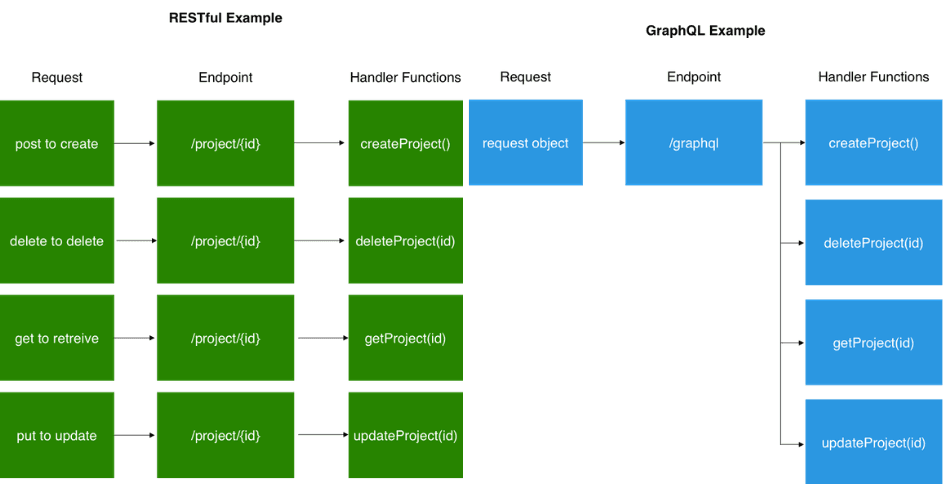
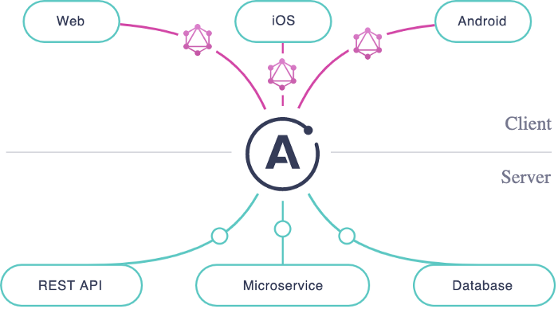

GraphQL & Apollo
An intro for Angular devs
What is GraphQL?
- Developed internally by Facebook
- “A query language for your API”
- Unlike a REST API where you hit a separate endpoint for each query, it only has 1 endpoint
- Allows you to instead describe your data using specific parameters, and thus get back predictable results
- Relational queries with less API calls
Some GraphQL advantages:
- Reduces number of api calls on the client side (single endpoint with multiple handler functions)
- Strongly typed
- Better performance
- Improves development speed
- Apollo provides handy UI for everyone to use (I mean everyone - QA, devs, product, your non-technical friend)

https://medium.com/@JeffLombardJr/when-and-why-to-use-graphql-24f6bce4839d
What is Apollo?
- A cloud platform to help developers “build, query, manage, and scale a unified graph"
- It is "a data layer that enables applications to interact with data from any combination of connected data stores and external APIs.”
- Acts as a source of truth to track your schema changes
- Uses GraphQL to define/enforce this data flow
- Provides a UI (Apollo Studio) that is accessible to non-backend devs

https://www.apollographql.com/docs/intro/platform/
Using GraphQL With an Angular Frontend
- Support for GraphQL projects with an Angular front end is growing
- The library Apollo Angular is popular
- Frontend developers can copy/past their queries from Apollo Studio directly into their code
Code demo
Let's take a look at an exmaple application which displays a list of restaurants and addresses, as well as a form to add a restaurant to the database.
Thank you!
Connect with me on Twitter or LinkedIn
Join the Bitovi Slack community